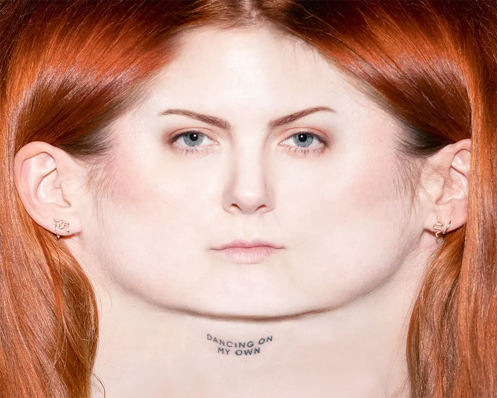
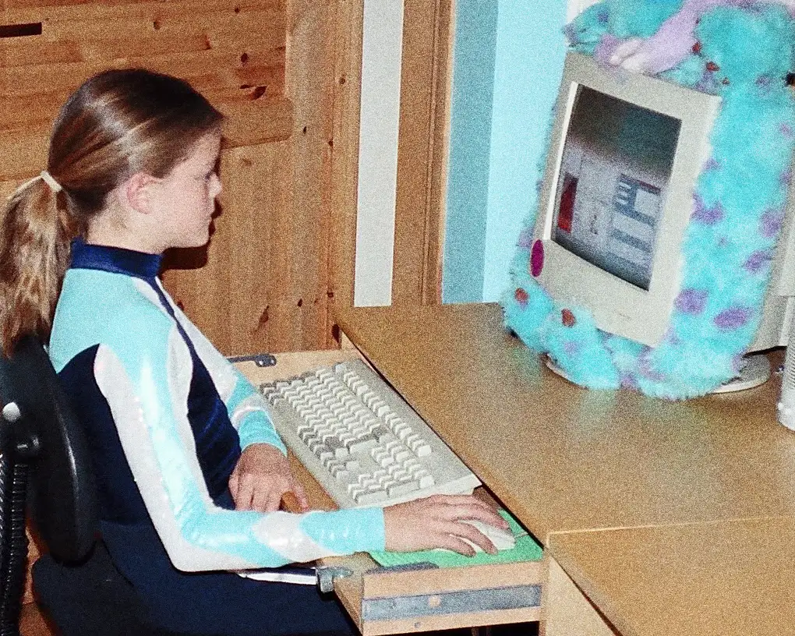

Hello! I'm Lene. A frontend student, building tiny things toward bigger ones.
Scroll down


Ever since I was a little girl, I knew I wanted to be on the computer a lot.
Projects
Tools & technologies
Frontend:
Design background:
Human details
Location: Norway
Education: Frontend Development, Noroff
Background: Design & photography
Focus: Clean UI, structure and responsive systems
Goal: Junior frontend role
Also This:
I design before I code.
I care about spacing and systems.
I prefer small, complete features over big unfinished ideas.
I ask why before I build.